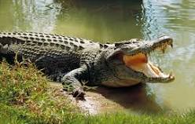
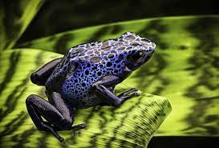

Have you been to the zoo? You must have seen all sorts of animals. But have you ever asked yourself if you are an animal yourself? Well, I'm typing to answer that question by telling you the different types of animals.
Mammals have hair or fur; are warm-blooded; most are born alive; the young are fed milk produced by the mother's mammary glands; and they have a more complex brain than other animals. This video will elaborate on it.All about Mammals Creatures such as humans, dogs, elephant and much more are classified as mammals.

Reptiles are vertebrates. They have backbones. Their bodies are completely covered with scales. They are cold-blooded. Reptiles produce shelled eggs or bear live young. All species fertilize eggs internally. All species of reptiles have at least one lung. To understand more watch this.The Reptiles Animals like snakes, lizards, crocodiles and more are considered reptiles.
Amphibians are cold-blooded vertebrate animals. Some of the most common kinds are frogs, newts, salamanders, and toads. They can be found all over the world, from the rainforest to the bottom of your garden. They are often brown or green but can also be yellow, red, or even blue! To learn more sit and witness this vid.Amphibians for Kids Creatures such as frogs, toads, salamanders, and newts are amphibians.
